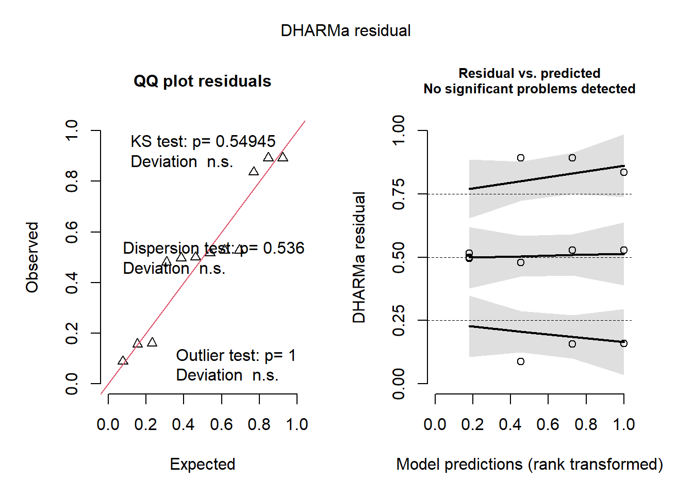

El código primero transforma la variable inib del dataset bac mediante la función mutate de dplyr, creando una nueva variable llamada inib_log que es el logaritmo natural de inib incrementado en 1 para evitar problemas con valores cero. Luego, ajusta un modelo ANOVA utilizando lm para analizar la relación entre la variable transformada inib_log y el tratamiento trat. Finalmente, se muestra un resumen del modelo ajustado con summary(m1_log), proporcionando detalles estadísticos del modelo, incluyendo coeficientes, errores estándar y significancia.
ver código
# Transformar la variable inibbac <- bac |>mutate(inib_log =log(inib +1))# Ajustar el modelo ANOVAm1_log <-lm(inib_log ~ trat, data = bac)summary(m1_log)
Call:
lm(formula = inib_log ~ trat, data = bac)
Residuals:
Min 1Q Median 3Q Max
-0.034695 -0.006789 0.000122 0.007025 0.034298
Coefficients:
Estimate Std. Error t value Pr(>|t|)
(Intercept) 0.69315 0.01590 43.60 8.45e-11 ***
tratestreptomicina 0.40509 0.02248 18.02 9.24e-08 ***
tratrifampicina 0.61494 0.02248 27.35 3.44e-09 ***
tratsulfonamida 0.37117 0.02248 16.51 1.83e-07 ***
---
Signif. codes: 0 '***' 0.001 '**' 0.01 '*' 0.05 '.' 0.1 ' ' 1
Residual standard error: 0.02754 on 8 degrees of freedom
Multiple R-squared: 0.9898, Adjusted R-squared: 0.986
F-statistic: 258.7 on 3 and 8 DF, p-value: 2.656e-08
3 Supuestos de Normalidad y Homocedasticidad
Este script en RStudio para Quarto verifica la normalidad y homocedasticidad de los residuos de un modelo lineal m1_log. Primero, la función check_normality(m1_log) evalúa si los residuos siguen una distribución normal, lo cual es crucial para la validez de muchos análisis estadísticos. Luego, check_heteroscedasticity(m1_log) revisa si la varianza de los residuos es constante a lo largo de los valores predichos, condición conocida como homocedasticidad. Finalmente, plot(simulateResiduals(m1_log)) genera gráficos de los residuos simulados del modelo para visualizar estos aspectos y otros posibles problemas, proporcionando una evaluación gráfica completa del ajuste del modelo.
ver código
# normalidad y homocedasticidad check_normality(m1_log)
OK: residuals appear as normally distributed (p = 0.070).
ver código
check_heteroscedasticity(m1_log)
OK: Error variance appears to be homoscedastic (p = 0.296).
ver código
# Normalidad y homocedasticidad plot(simulateResiduals(m1_log))

4 ANOVA
Este script realiza un análisis de varianza (ANOVA) utilizando el modelo lineal general con aov() para evaluar la influencia del tratamiento (trat) en la variable de respuesta (inib), utilizando datos del objeto bac. El análisis identifica si existen diferencias significativas entre los tratamientos. Luego, se aplica el test de Tukey (TukeyHSD()) para realizar comparaciones múltiples entre los tratamientos y determinar cuáles son estadísticamente diferentes entre sí, imprimiendo los resultados con tukey. Finalmente, se utiliza multcompLetters4() para generar letras de comparación que indican grupos estadísticamente similares, basadas en los resultados de Tukey, y se imprimen con cld. Este proceso ayuda a identificar y categorizar diferencias significativas entre tratamientos en el estudio.
ver código
# Anova para correr con TukeyHSDANOVA <-aov(inib_log ~ trat, data = bac)# Test de Tukeytukey <-TukeyHSD(ANOVA)tukey
# Comparación con multcompViewcld <-multcompLetters4(ANOVA, tukey)cld
$trat
rifampicina estreptomicina sulfonamida ciprofloxacina
"a" "b" "b" "c"
5 Test de Tukey
Se agrupa el conjunto de datos por el factor trat y se calcula la media y el tercer cuartil (Q3) de la variable inib utilizando las funciones group_by, summarise y quantile. Luego, se ordena el resultado en orden descendente según la media calculada. Posteriormente, se asignan letras de comparación a los tratamientos en base a un objeto cld que contiene estas letras, creando así una nueva columna cld en el dataframe Tk, que ahora contiene la media, Q3 y las letras de comparación para cada tratamiento.
ver código
# Crear tabla con factor y 3er cuartil (Q3)Tk <- bac |>group_by(trat) |>summarise(mean =mean(inib), quant =quantile(inib, probs =0.75)) |>arrange(desc(mean))# Asignar letras de comparación a Tk_log basado en cld_logcld_df <-as.data.frame.list(cld$trat)Tk$cld <- cld_df$LettersTk
# A tibble: 4 × 4
trat mean quant cld
<chr> <dbl> <dbl> <chr>
1 rifampicina 2.7 2.75 a
2 estreptomicina 2 2.05 b
3 sulfonamida 1.9 1.95 b
4 ciprofloxacina 1 1 c
6 Visualización de resultados
Con la función mean_cl_boot se calcula la media y los intervalos de confianza al 99% para un vector x. Dentro de la función, mean(x, na.rm = TRUE) calcula la media, sd(x, na.rm = TRUE) / sqrt(length(x)) calcula el error estándar de la media, y luego se calculan ymin y ymax como límites inferior y superior del intervalo de confianza al 99% respectivamente. El gráfico generado con ggplot utiliza los datos del dataframe bac, mapeando trat en el eje x y inib en el eje y, coloreando por tratamiento (color = trat). stat_summary utiliza la función mean_cl_boot para calcular y representar las medias y los intervalos de confianza como puntos y rangos (geom = "pointrange"). Además, geom_text agrega etiquetas de comparación de letras (cld) con ubicaciones específicas (quant) para cada tratamiento (trat). Se personalizan los colores con scale_color_brewer, se aplica un tema minimalista con theme_minimal, se etiquetan los ejes y se ajusta el formato del texto y títulos de los ejes con labs y theme.
ver código
# Función para calcular media e intervalos de confianza al 99%mean_cl_boot <-function(x) { m <-mean(x, na.rm =TRUE) se <-sd(x, na.rm =TRUE) /sqrt(length(x)) ymin <- m -2.576* se # Intervalo de confianza al 99% ymax <- m +2.576* se # Intervalo de confianza al 99%return(c(y = m, ymin = ymin, ymax = ymax))}# Crear el gráfico con intervalos de confianza más largosggplot(bac, aes(x = trat, y = inib, color = trat)) +stat_summary(fun.data = mean_cl_boot, geom ="pointrange", size =0.8) +geom_text(data = Tk, aes(label = cld, y = quant, group = trat), vjust =-0.5, size =5, fontface ="bold", color ="black") +scale_color_brewer(palette ="Paired") +theme_minimal() +labs(x ="Tratamientos", y ="Crecimiento (Inhibición)") +theme(axis.text.x =element_text(size =12, color ="black", angle =45, hjust =1),axis.text.y =element_text(size =12, color ="black"),axis.title =element_text(size =14, color ="black"),legend.position ="none")